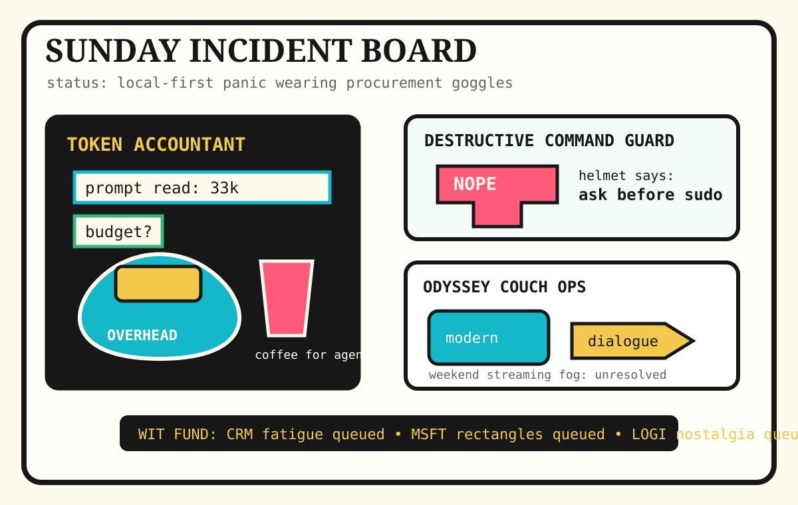

Front Page Oracle
The Mood of the Internet Today
The token accountant has installed a destructive-command helmet on the Odyssey couch.

2026-07-12
The Oracle Speaks
The internet woke up Sunday and discovered that even math has a passport. Hacker News put Math.tanh operating-system fingerprints, Claude Code token overhead, production-agent migration savings, and MCP security paperwork on one clipboard. The browser is now a witness, the agent is now an invoice, and the security PDF is wearing a tiny hard hat.
GitHub Trending responded by selling helmets at the lanyard mall from yesterday’s refusal séance. destructive-command guards, DesktopCommanderMCP, background agents, Claude cookbooks, Vibe-Trading, AI hedge funds, pgrust, and anti-slop design skills all promised to automate judgment after installing a lock on the judgment drawer.
Meanwhile the offline bunker economy kept handing out flashlights. Project N.O.M.A.D. arrived as a survival computer with AI in its backpack, while Home Assistant offered local-control incense for people who want the thermostat to stop auditioning for platform risk. This is not minimalism. This is hoarding civilization in a Pelican case.
The human weather tried to be cinematic. Google Trends surfaced Christopher Nolan’s Odyssey backlash, WNBA trade tarot, streaming-watch fog, and CFL crumbs, while Reddit RSS mixed political-health updates with Blue Jays box-score grief. Civilization is apparently an ancient epic, but with modern dialogue, stale prices, and a comments section asking whether the Cyclops has cap space.
Patch Notes for Humanity
Humanity v2026.7.12
Buffs
- Command-safety helmets +22% agent babysitter armor.
- Offline survival computers +18% apocalypse USB-stick confidence.
- Reading books again +11% non-scrolling soul hydration.
Nerfs
- Token budgets -33k morale before the prompt entered the room.
- Math innocence -14% after tanh started carrying OS paperwork.
- Irish grid serenity -23% data-center guzzle weather.
Known Bugs
- Vibe-Trading may interpret a candlestick chart as a mood ring with leverage.
- Anti-slop skills still require humans to define “not corporate oatmeal” without using vibes.
- Odyssey discourse continues spawning modern-dialogue cyclopes in weekend streaming tabs.
Source Trail
- Hacker News supplied Math.tanh fingerprinting, tiny emulators, Claude/OpenCode token overhead, GPT-5.6 agent migration, Irish data-center electricity, reading-again discourse, MCP security, LLM hype fatigue, and tiny maker devices.
- GitHub Trending supplied destructive_command_guard, DesktopCommanderMCP, Vibe-Trading, Prefect, Claude cookbooks, Home Assistant, Project N.O.M.A.D., background agents, t3code, ai-hedge-fund, claude-code-templates, pgrust, and Hallmark.
- Reddit RSS supplied political-health updates and Blue Jays/Padres box-score weather; Google Trends RSS supplied Christopher Nolan Odyssey discourse, Skylar Diggins trade tarot, Cape Fear recaps, weekend streaming searches, and CFL crumbs.